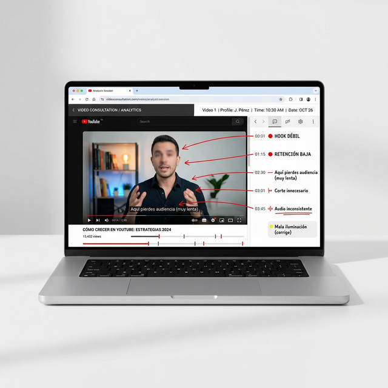

Análisis profesional de tu contenido en YouTube. Más de una década especializado en vídeo de larga duración.
Quizá llevas meses estancado. Quizá inviertes horas en producción sin ver retorno. O quizá te va bien, pero sabes que podrías ir mucho mejor.
El problema casi nunca es técnico. Es lo que pasa dentro del vídeo: cómo empieza, cómo engancha, cómo cuenta la historia. Desde dentro de tu propio canal, eso es casi imposible de ver.
Recibirás un vídeo privado con tu análisis personal, siguiendo un método de 6 bloques que cubre todo lo que importa en un vídeo de larga duración.

Metodología de análisis aplicada a tu contenido
¿Tu título y miniatura trabajan juntos? ¿Generan click y cumplen la promesa?
¿Tus primeros 30 segundos enganchan o pierdes a la gente antes de empezar?
¿Tu vídeo cuenta una historia o solo informa? ¿Se siente algo al verlo?
¿Dónde se va la gente y por qué? Los puntos exactos donde pierdes audiencia.
Edición, cortes, ritmo, detalles de producción. Lo que se puede mejorar a nivel técnico.
Lo que yo cambiaría hoy si fuera mi vídeo. Accionable y directo.
La duración del análisis suele ser de 15-20 minutos, aunque puede variar según la complejidad del vídeo.
Me cuentas sobre tu canal, tu situación y qué quieres mejorar.
Evalúo si encajamos y si puedo aportarte valor real con mi método.
Si encajamos, te responderé con los siguientes pasos. Confirmamos y analizo tu vídeo a fondo con mi método de 6 bloques.
Un vídeo privado con el diagnóstico completo, habitualmente en 7-10 días laborables. Si necesitas urgencia, pregúntame por el Análisis Express (24-48h).
Un creador profesional que llevaba meses atascado entre 500 y 1.500 visitas por vídeo. Trabajamos juntos durante un año con más de 30 revisiones. Lanzó un nuevo canal, aplicó todo, y su siguiente vídeo superó el millón de visitas.
Creador profesional estancado en 100-200 visitas por vídeo. Tras 2-3 sesiones de revisión y aplicar los cambios, en menos de un mes su siguiente vídeo alcanzó más de 40.000 visitas.
Creador profesional con 1.000-2.000 visitas por vídeo. Tras una única sesión, sus vídeos empezaron a alcanzar una media de 200.000 visitas por vídeo.
Por confidencialidad, no hago públicos los datos ni los canales de mis clientes.
Estos son resultados de creadores profesionales dedicados a tiempo completo. Los resultados varían según el canal, el nicho y el nivel de compromiso. No son garantizables.
Dani en 10 minutos vio fallos que llevaba más de un año cometiendo. La calidad de mis vídeos y visitas aumentó de manera inmediata.
Soy Dani Bonilla. Llevo más de 10 años especializado en vídeo de larga duración para YouTube. En mi canal personal, mi vídeo más visto supera las 920.000 visitas. He editado y producido contenido largo para otros canales con vídeos que han superado los 9 millones de visitas. Contenido en 3 idiomas, mercados en Hispanoamérica, Suiza, Reino Unido y EEUU.
Llevo años asesorando a creadores y empresas a puerta cerrada. Básicamente, me siento delante de tu vídeo y te digo exactamente lo que no funciona.
@danibonilla1Rellena el formulario y te respondo personalmente con los siguientes pasos.
Te responderé personalmente si tu perfil encaja.
Revisa tu bandeja de entrada.